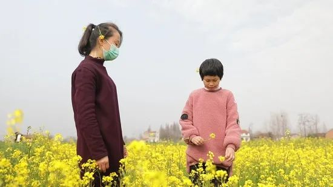
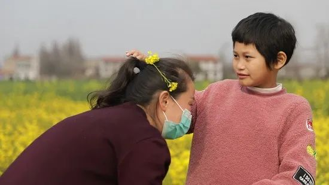
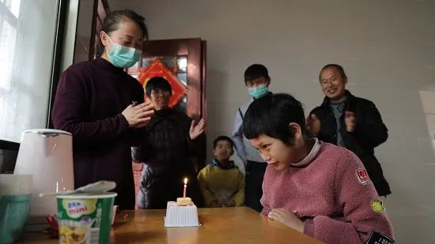
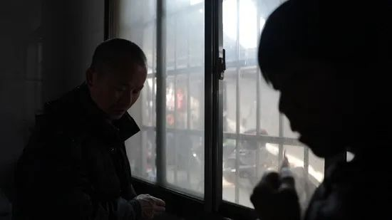
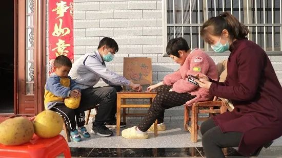

这个头条，我们留给非肺炎患者
原文链接 备份链接 新冠肺炎疫情的防控正在逐步进入平稳轨道。全国31省市报告确诊病例在逐日减少，医院扩建、全民隔离，一部分患者也陆续出院。 这场前所未见的疫灾，让多少人体会了一次死里逃生。但与此同时，还有另一部分人，在依然严峻的寒冬冰封里 …

今天（2月29日）是国际罕见病日。即使不是新冠肺炎确诊患者，疫情也如影随形地影响着罕见病家庭。
8岁湖北农村女孩开心患有罕见病结节性硬化症（TSC），目前家里的药只够吃两周。
结节性硬化症，患者脸上多以鼻子为中心向鼻翼两边以蝴蝶形状长出结节点，因此得名“蝴蝶结症”。
疫情当下，封城封路，交通不便，便宜药买不到、昂贵药吃不消。这些都让开心继续服药变得困难重重。如果没有药，开心会陷入持续癫痫的状态，呼吸困难，抢救不及时会有生命危险。
【南都N视频】视频：南都特派记者 董梓浩 苏海伦 后期：陈杰豪 编辑：陈蓓蕾

近日，南方都市报接到开心妈妈余鸢的求助，她称孩子的药快吃完了，以往买的药都是代购从土耳其捎回来的，但最近代购也买不到药了，“从去年11月开始药品就变得很紧张”。
北京蝴蝶结结节性硬化症罕见病关爱中心告诉南都记者，结节性硬化症患者的救命药氨己烯酸片（又称“喜保宁”）在境内既无生产厂家也无商家销售，罕见病患者家庭大多只能通过找人代购的形式买药，“和电影《我不是药神》情节差不多”。
南都记者从寇德罕见病中心（CORD）了解到，该中心统计目前超过300名罕见病患者正面临缺药困境。虽然香港也有喜保宁出售，但港版喜保宁价格较贵，疫情也影响了发货，“光呼吁不奏效，希望更多人看到患者家庭的困难。”
救命的药贵且难买
2月21日，从湖北荆州市区驱车数十公里，经过防疫检查点设置的重重关卡和多次测温，南都记者抵达位于公安县闸口镇的开心的家。
开心身材颀长。刚过完8岁生日的她，个头已将近1米5。大人们说，她长大后，会有一副“衣架子身材”。2012年，开心出生在深圳，11个月大时，被确诊为患有结节性硬化症。一份由深圳市儿童医院出具的疾病诊断证明书显示，“诊断：结节性硬化症，难治性癫痫，先心病，孤独症”。
8岁的开心生活尚不能自理，不懂表达，不会与人沟通，需要24小时看护。发病时，癫痫就像魔鬼一样缠着她。


开心的妈妈余鸢40岁，是位单亲妈妈。她曾在深圳的连锁快餐店打工，迫于生活压力，去年带着开心回到湖北荆州的农村老家。
在开心的房间，余鸢将孩子日常吃的药一字排开。“喜保宁、德巴金、雷帕霉素，这些都要吃。主要还是喜保宁，治婴儿痉挛的。”余鸢说，“如果能买到土耳其的喜保宁，现在价格应该也在500元一盒了。”喜保宁也有港版，不易买到，1200元到1500元的价格，对开心一家来说，也吃不消。


开心的药还能撑两周，余鸢很着急。
南都记者了解到，原研药喜保宁的生产方是法国公司。CORD工作人员表示，他们或许能够尝试帮忙在香港购买港版喜保宁，“我们可以链接各方资源和各个相关方，共同去解决患者的需求”。
北京蝴蝶结结节性硬化症罕见病关爱中心主任刘金柱的儿子，也是一名结节性硬化症患者。他告诉南都记者，由于境内没有厂家生产喜保宁，也无正规渠道销售该药，患者家庭只能通过代购买药，“游走在法律的边缘，跟电影《我不是药神》的情节差不多”。
刘金柱表示，幸好境内德巴金和雷帕霉素不缺，“雷帕霉素与华北制药有合作，之前特定生产了一批。”
至少300同类罕见病患者缺药
治疗罕见病的急需药品难找是常态，有人亦称其为“孤儿药”。罕见病患病人群少，市场需求少，研发成本高，企业投入产出不对等因素造成这种状况长期存在。CORD工作人员表示，最近他们统计到超过300名结节性硬化症患者面临缺药困境，新冠肺炎疫情发生后，需求愈发紧迫。
刘金柱告诉南都记者，对于湖北地区的患者来说，缺药问题颇为严重，因为疫情原因，购药、收取药品快递很不方便。CORD工作人员则表示，尽管湖北多地封城，但CORD在联系武汉相关的物流机构、志愿者团队和网络售药平台，力求解决患者寻药的最后一关。

2月21日，是开心的生日。往年生日，家人给她买了好吃的蛋糕，今年由于疫情，村封了，蛋糕也买不到了。这一天，家人给她准备了她爱吃的泡面，简单地过了个生日。

开心喜欢小猪佩奇和超级飞侠，想玩手机时，懂得找妈妈要。她会热情地拥抱同龄的孩子，但总是不说话，让孩子们感到不解和害怕，因此和她玩的孩子并不多。她喜欢小动物，能一把抓住鹅的脖子，却不松手。她爱干净，不喜欢到田里去玩，到别人家做客时从来不用人家的洗手间。

开心的外公在外打零工，“修道路的”，为了照顾开心，就回家了。外公外婆有四五亩地，种点黄豆棉花，养点鱼，维持生计。回家后的妈妈余鸢，给做个体户的妹妹打工，“白天去她那里帮忙，晚上尽量早点回来陪开心”。
“她选择了我，我就尽全力”
南都记者了解到，世界上每 6000 个新生婴儿中就有一个结节性硬化症患儿，地球上每隔20分钟就有一个结节性硬化症患者降生，中国的结节性硬化症约有10万人，全世界有100万以上的结节性硬化症患者。
2018年5月11日，国家卫健委等5部门联合制定了《第一批罕见病目录》，结节性硬化症被收录其中。刘金柱表示，这意味着国家承认了该病，“希望监管机构在制定政策时有所倾斜。”
开心蛮依赖妈妈，虽然不能正常说话，但会通过摸头的方式向妈妈表达爱意。余鸢说，现在回老家了，唯一的想法就是好好照顾女儿。“以前每隔三个月会去医院复查一次，每隔半年对头部和腹部做一次核磁共振，最近两年都没去复查，本来计划春节期间带她去做一次全面复查，眼看疫情来了也出不去。”

余鸢说，“孩子一个月的药费得三四千块钱，只要用药能有保障，哪怕她的情况再差，我都能接受，因为既然她选择了我，我就尽全力照顾好她。”
回想起女儿在深圳的康复之路，余鸢说，那几年过得非常艰辛，虽然每天过得很辛苦，但没有觉得累。

她永远记得开心10个月之前的样子，“那时她活泼可爱，跟她说什么，她都好像特别理解我。”
（文中开心、余鸢为化名）
南方都市报（nddaily）原创报道
采写：南都特派记者 苏海伦
摄影：南都特派记者 董梓浩
视频：南都特派记者 董梓浩 苏海伦 后期：陈杰豪 视频编辑：陈蓓蕾
发自湖北荆州
* 南方都市报（nddaily）原创内容未经授权，不得转载。
▊ 南都君特选（戳下方标题）
点个“在看” ↓↓
原文链接 备份链接 新冠肺炎疫情的防控正在逐步进入平稳轨道。全国31省市报告确诊病例在逐日减少，医院扩建、全民隔离，一部分患者也陆续出院。 这场前所未见的疫灾，让多少人体会了一次死里逃生。但与此同时，还有另一部分人，在依然严峻的寒冬冰封里 …
原文链接 备份链接 编者按 ▼∇▼∇▼∇ 2019年开始，面向农民工子女的实务学堂，和面向女工的木兰花开，合作组织了一个女工写作班，参加的女工，有的是家政工，有的是厨师，有的是销售员。 最近，大家有的在北京，有的在老家，多多少少，也都受 …
原文链接 备份链接 一周多前小南发起了一场征集——“疫情过后你最想做的一件事”,得到了读者朋友们的积极参与。下文是00后武汉大学生薛珂发来的一篇自述。 文 | 薛珂 编辑 | 小豆 出生于2000年，今年虚岁20，我是武汉华中科技大学的一 …
原文链接 备份链接 这段时间，生活乱糟糟的，整天不是担心这个就是害怕那个，三个亲人隔离，我一个人带着两个娃度日，本来可以是悠然的居家时光，却因为疫情让我这个家步履维艰。 口述 | 叶子（化名） 整理 | 黄祺 今天是我33岁的生 …
原文链接 备份链接 “ - 疫 情 之 下 - 看到爸爸如此坚强的内心和乐观的心理状态，我也充满了信心。 ” 故 事 练 习 生 习 作 第 58 篇 1月20日晚间，钟南山院士对“新型肺炎人传人”的一句肯定，让全国各地陷入对病毒 …